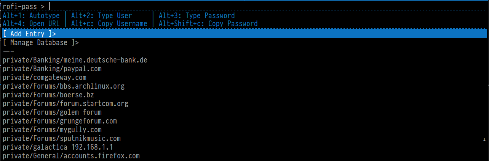

password management in a nutshell
There are quite a few ways to handle your passwords in linux. You could use the same password on every site and don't bother with password managers at all. Obviously that is a very bad idea, security-wise. Then there are services such as lastpass. You sign up and in return you get a browser extension which makes it very easy to add pages to your password vault. It also helps a lot entering passwords. Basically lastpass auto-fills all fields for you. It's a very convenient way of handling your passwords - and requires a lot of trust in 3rd party organizations. Which in this case is even located in the US, which basically forces them to include backdoors for the gouvernment. Ouch.
If security or trust is of concern to you, you need an application that is a) Open Source and b) hosted by yourself. There are prominent applications like keepass. It's open source and runs on all 3 major platforms, including linux. It's, however a mono application, which can lead to issues every now and then. All in all it runs quite well, has many features and also comes with ways to integrate into the browser. Its IPC mechanism is more or less unusable in linux, because the needed firefox plugin also needs mono. The http interface works well, but has obvious limits making it a rather unpleasant workflow.
If you seek for an alternative to keepass which also has some kind of browser integration you are basically screwed. They normally use xdotool to type Username and Password automatically, sending tab sequences in between. Well then. using xdotool, huh? I can do that too.
Say hello to pass - The gnu password store.
There is another little tool called pass, which has a nearly primitive aproach: It parses its password directory (default $HOME/.password-store), which is nothing more than a few directories (groups) filled with gpg-encrypted text files. The first line of each of these files is the password. All other lines can be used however the user likes. That's all.
integrate pass with xdotool.
Seems rather easy to implement with xdotool, get the password with
pass FOLDER/name and then call xdotool to type it.
But what about Username? What if a site requires more than 2 fields to be filled?
What if some stupid javascript automatically presses the Tab key for you?
A proper format is needed. And that's what I did (together with foxxx0) There is an importer for keepass files to pass files, which uses the following syntax:
password
UserName: myUser
URL: some.url.com
Since I used keepass anyway, I decided to keep this format. So what rofi-pass does is basically this:
- parse the password
- store UserName: and URL: in a temporary variable
- call xdotool to type <UserName>, Tab, <Password> (letter by letter, not word by word to make sure it's not visible in a process viewer)
- unset variables.
So far so good. This works for the vast majority of pages. But now think about your online banking. Most likely you need a account number, a branch and your PIN to log in.
rofi-pass has the ability to define a custom order for fields that will be typed. See this example:
penispump123
branch: 348
account: 1122334
URL: https://my.bank.de
CustomOrder: account branch
As you can see here we have more fields defined. The most important bit is the last field called CustomOrder
Here one can define which fields will be processed in what order. In this case it's the fields "account" and "branch"
The very first line will always be typed last, since pass expects this to be the password.
This allows us to use autotype on any number of fields very easily.
If your page uses one of these autotabbing scripts mentioned above (like my bank does) simply add NOTAB at the end of the
password file.
rofi-pass features
rofi-pass can do the following:
- type User
- type password
- autotype (default <UserName>, Tab, <Password> - can be customized by CustomOrder field.
- insert new pages to password store.
- edit entries (using $EDITOR)
- copy entries to clipboard
Since rofi-pass uses rofi, it's very fast to filter all your entries and find the one you are looking for. By the way. rofi-pass will not work with dmenu. Why is that?
Several reasons: First of all rofi fixes an annoying bug, one can run into with dmenu, where a KeyRelease event will be left on stdin, which can lead to first keypresses not being recognized properly. (issue on github)
Second and this is the most important part: rofi lately gained a feature allowing users to write scripts that can associate multiple hotkeys on the selection. This allows us to decide if we want to type the User only or use the complete autotype sequence without additional submenus. Very convenient!
Anyway, a picture says more than 100 words:

Get rofi-pass here: rofi-pass
Links
pass homepage
rofi github page
foxxx0 github page